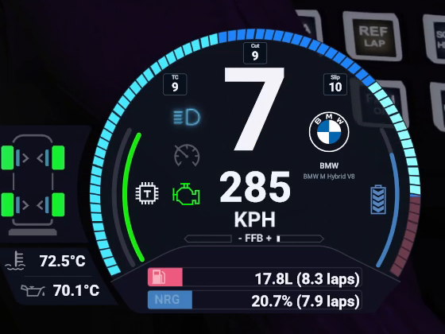
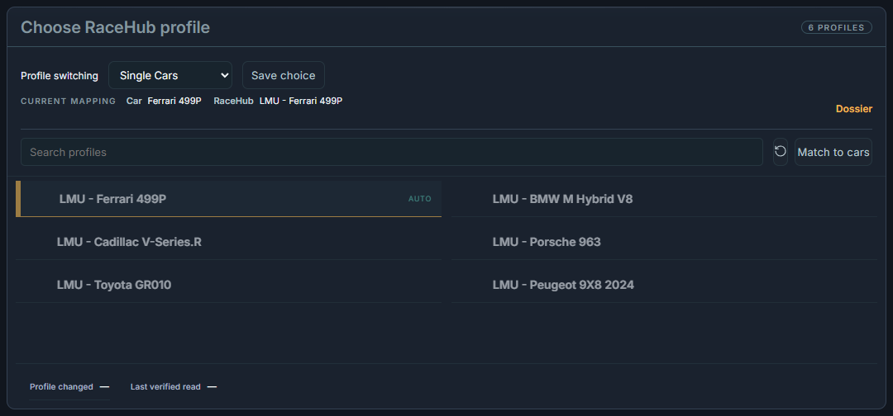

JUST ONE
MORE LAP.
Free cockpit HUD for Le Mans Ultimate, RaceHub profile switching for Asetek, and the next online races in your local time.
Drive in action
See tyres, timing, flags and multiclass traffic in SteamVR or on a monitor.

See where the circuit is drying.
Drive shades the road on all 34 mapped layouts. During rain-free drying, it can show a 30-second estimate of how the racing line may change.
Drive estimates surface wetness from LMU conditions, weather, recent traffic and available track data.
Explore the wetness research ↗
CHANGE CARS.
KEEP THE FEEL.
Your Asetek wheelbase. Your saved RaceHub profiles. RookForce follows the car and checks which profile is active, so the next car feels the way you chose.
Asetek Forte · Windows x64 with RaceHub. Check wheelbase compatibility.
Meet RookForce
BEFORE THE LIGHTS / SCHEDULES
Find your next race.
Find the next online start, the classes on the grid, and the published weather. Keep LMU closed until you’re ready.
Open the full race forecast ↗Checking the next published starts…
Community schedule from LMU Portal. Checks every 30 seconds while open. Times follow your browser’s timezone.
Help & support
Find the latest stable Drive release notes below, or use the setup and troubleshooting guides to get back on track.
Latest stable Drive release notes ↗Drive setup guide · Troubleshoot Drive · RookForce guide
For bug reports, include your app version, monitor or VR setup, and the steps to reproduce it. Feature ideas are welcome in the same community.
Join the Rookline Discord ↗